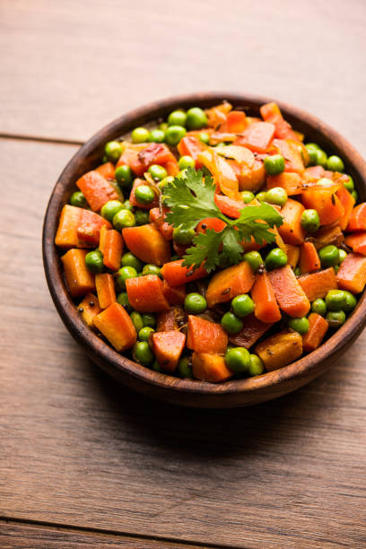

Chicken shorba is a fragrant, nutrient-dense Indian or Middle Eastern chicken soup made by simmering chicken (often bone-in) with aromatic spices, herbs, ginger, and garlic. It is characterized by a light, clear-to-golden, broth-like consistency, offering a comforting and flavorful alternative to thicker soups, often served with lemon.